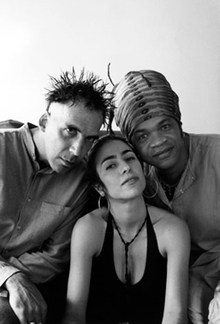

Inicial
Carreira Top 5
Albuns Videos
Carreira

Tribalistas foi um trio musical/supergrupo brasileiro de MPB composto por Arnaldo Antunes,
Carlinhos Brown e Marisa Monte. Tal reunião resultou em um único álbum lançado no Brasil em 2002
pela gravadora Phonomotor Records com distribuição nacional e internacional da EMI e no exterior
lançando em 2003. O álbum vendeu mais de 1,5 milhão cópias somente no Brasil. No total, o album
vendeu mais de 2,1 milhões de cópias. Recebeu cinco indicações para o Grammy Latino em 2003,
ganhando um. Algumas faixas do CD/DVD foram remasterizadas e fizeram muito sucesso na Europa.
O curioso é que o trio nunca se apresentou junto e nunca fizeram uma grande turnê, com três raras
exceções: Grammy Latino, e no DVD Ao Vivo no Estúdio, e a terceira aberta ao público no Sarau do
Brown.1 . Marisa Monte é única que cantou várias músicas do grupo na turnê mundial "Universo Particular"
e na turnê pelo Brasil "Verdade, Uma Ilusão".
Assim como a formação do grupo, o álbum nao surgiu repentinamente. Tudo começou quando Marisa
Monte foi gravar uma participação no disco que Arnaldo estava fazendo, produzido por Brown. O grupo
ficou junto por uma semana e resolveu fazer algumas músicas, embora não pensassem em gravar um disco
juntos. Para eles, o Tribalistas não era um projeto, era um sonho, um desejo que cada um tinha. Quando
o grupo saiu da Bahia já se tinha um repertório que podia ser gravado pelos três juntos. E então, depois
de muitas reuniões, decidiram-se por lançar um CD com um DVD incluso. O nome do grupo veio de uma música
composta pelo grupo que recebeu o título de "Tribalistas". Um nome que vem de "tri" (três integrantes),
de tribo. A canção foi feita já com esta ideia. No final de maio de 2013 foi lançada uma nova canção do
trio, intitulada "Joga Arroz", promovendo o Casamento entre pessoas do mesmo sexo no Brasil.